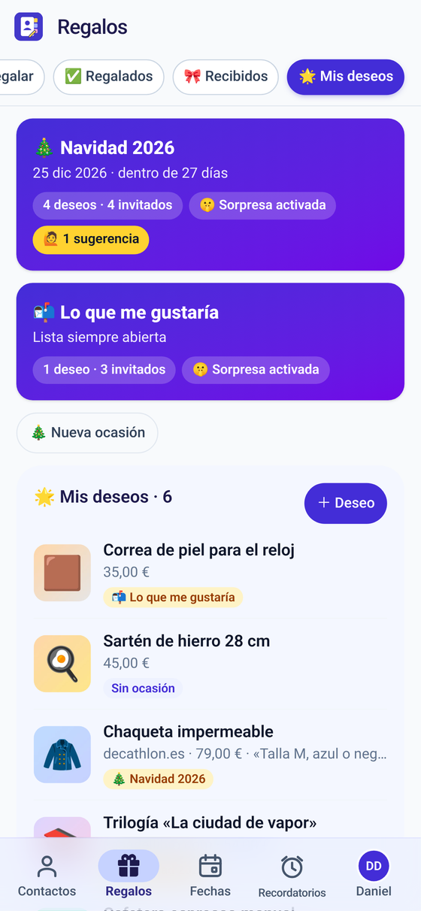
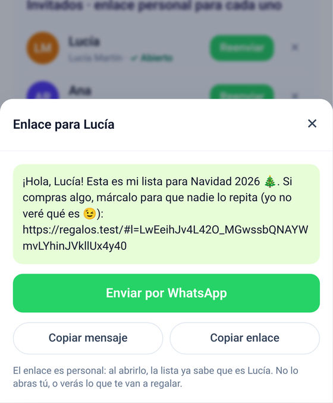
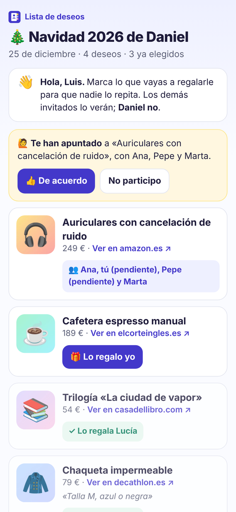
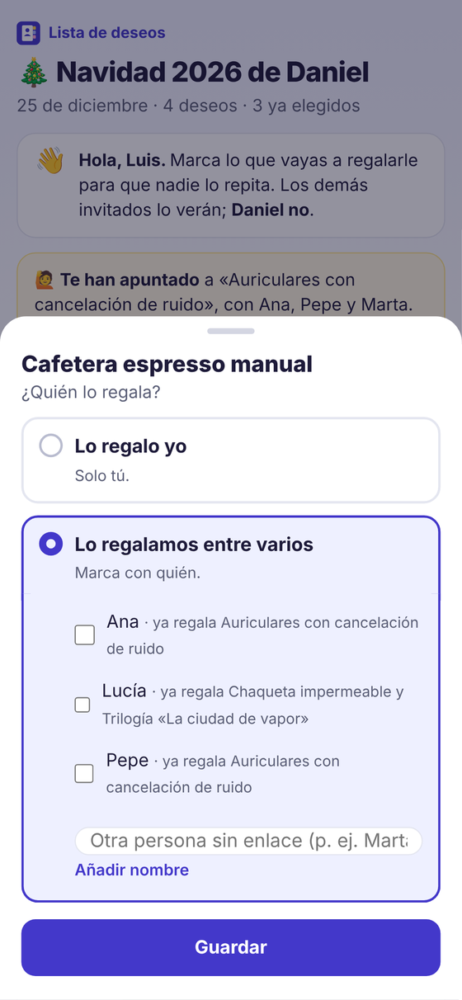
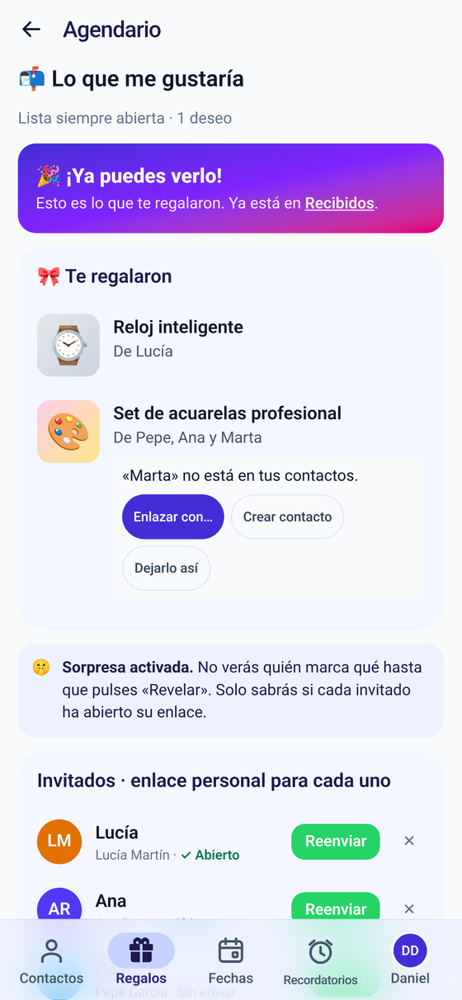
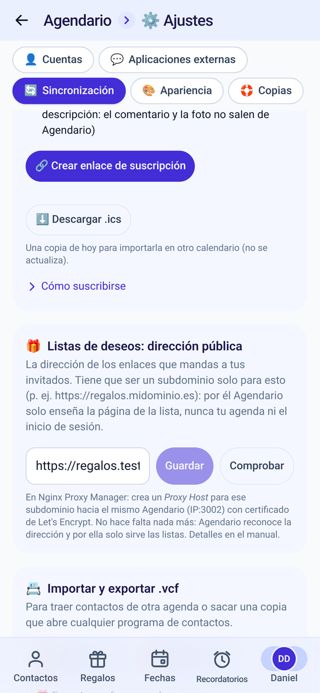

La 1.6 trae Mis deseos: tu lista de lo que te gustaría que te regalaran, que mandas con un enlace personal a cada invitado. Ellos se coordinan para no repetir y tú no te enteras de nada hasta después. Además, Agendario pasa a ser un gestor personal: desaparece compartir contactos entre usuarios.




Una página web normal: funciona en iPhone, Android y ordenador, sin instalar nada ni crear cuenta. Les saluda por su nombre y ven cada deseo con su foto, precio y enlace a la tienda.
El día después de la ocasión (si dejaste activada la revelación):
¿Te han mandado una lista de Agendario? En Mis deseos › Listas de otras personas › Pegar enlace (o con «Añadir a mi Agendario» desde la página de la lista en Android) la abres en tu app: eliges qué contacto es esa persona y lo que regales se apunta solo en su ficha como 🛒 comprado.

Los enlaces de los invitados van por un subdominio solo para las listas, por ejemplo regalos.tudominio.es. Por esa dirección Agendario solo enseña la página de la lista: ni la web, ni el inicio de sesión, ni el resto de la aplicación. Sin él puedes preparar deseos y ocasiones, pero no mandar enlaces.
regalos.tudominio.eshttp, Forward Hostname/IP y Port: los mismos que Agendario (IP del host Docker y 3002).https://regalos.tudominio.es, Guardar y Comprobar. Tiene que decir: «Todo bien: la dirección llega a Agendario y solo enseña las listas».
Agendario es un gestor personal. Puede seguir habiendo varios usuarios en el mismo servidor (por ejemplo, cada uno de casa), pero cada uno con su agenda, separada del todo. Desaparecen la visibilidad (privado, compartido, público), el panel de compartir de la ficha y la página Grupos. Ningún contacto se ha borrado: cada uno sigue siendo de su dueño. Lo que digan sobre compartir, visibilidad o grupos los capítulos anteriores ya no aplica.
bash /opt/actualizar-agendario.sh y crea el subdominio de las listas. En el móvil hace falta la APK 1.6.0 para Mis deseos (la anterior sigue funcionando con este servidor).